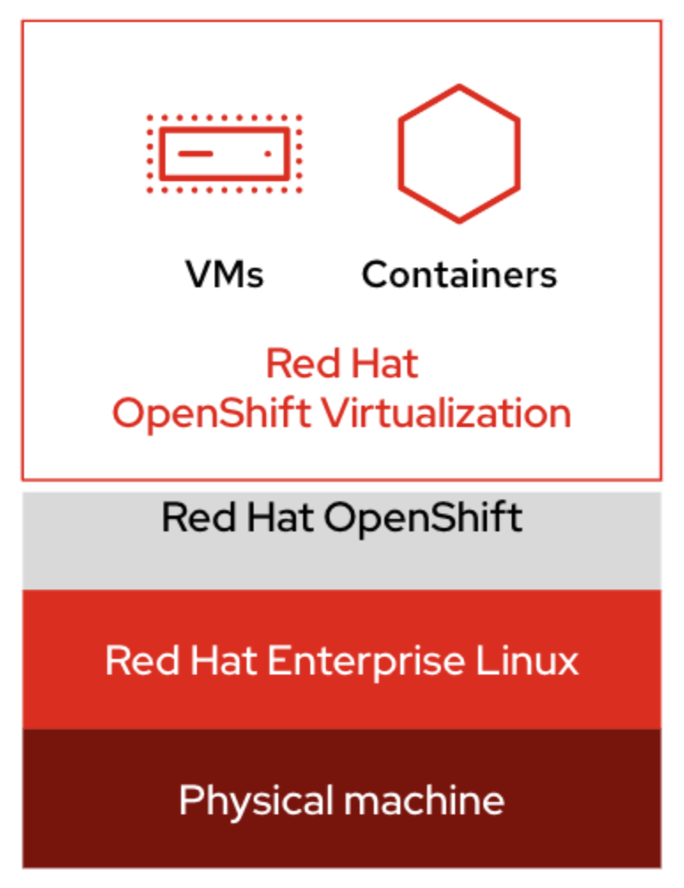
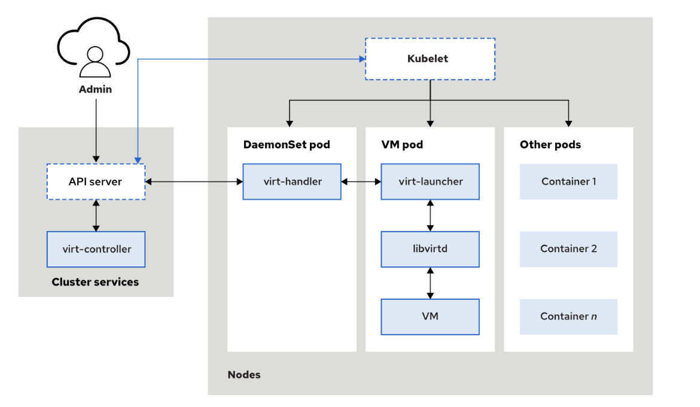

Solution Pattern: Modernize your VM workloads using ROSA with OpenShift Virtualization
Architecture
1. Technology Stack
-
What is OpenShift Virtualization
Red Hat OpenShift Virtualization is a certified operator in Red Hat OpenShift and is based on the KubeVirt Kubernetes virtualization add-on, which enables managing VM workloads alongside container workloads.
KubeVirt delivers container-native virtualization by using the Kernel-based Virtual Machine (KVM) Linux Kernel hypervisor within a Kubernetes container. Started by Red Hat, KubeVirt is now a Cloud Native Computing Foundation Incubation project and an open source upstream project. It provides similar capabilities to those of traditional hypervisor solutions, with the scheduling and orchestrational efficiency of Kuberenetes to provide a mature virtualization platform.
Adding OpenShift Virtualization to a Red Hat OpenShift cluster enables deploying and managing virtualized workloads with the same hardware, environment, and tool set that the containerized applications use. Managing virtual machines alongside containerized deployments in a single cluster provides both administrative and economical advantages such as unifying the management interface that system administrators use to improve application reliability while reducing operational overhead and simplifying their management tasks
 -
OpenShift Virtualization operator components
With the OpenShift Virtualization operator installed on a cluster, these resources are available on the cluster to manage virtual machines.
-
virt-controller works with Cluster API server to orchestrate virtual machine requests.
-
virt-handler runs in a daemonset pod and coordinates with the VM pod that runs the virt-launcher process to deliver the VM actions.
-
libvirtd daemon within the VM pod provides the functionality for performing specific VM actions at the kernel level.
Some benefits of managing VMs through OpenShift Virtualization are as follows:
-
Provides new custom resource definitions (CRDs) and controllers to extend Kubernetes functions by enabling virtualization-related tasks.
-
Supports creating and managing Linux and Windows VMs by using custom resources (CRs), the web console, the CLI, and YAML definition templates to customize VMs easily.
-
Enables creating VMs by cloning a persistent volume claim (PVC) that points to an existing VM’s persistent volume (PV).
-
Supports importing and managing VMs that are created outside the OpenShift cluster by making use of the Migration Toolkit for Virtualization.
-
Permits moving a Virtual Machine Instance (VMI) and its resources between cluster nodes with the help of live migration strategies, which eliminates the need to stop VMs before moving them.
-
Enables the deployment of virtual machines using pipelines, a methodology typically found in cloud-native approaches. This integration facilitates a more streamlined and automated deployment process, enhancing efficiency and consistency.
-
Empowers IT teams to adopt a modern approach to VM management, incorporating practices like DevOps and CI/CD, which can lead to more agile and responsive operations.
-
-
-
ROSA Architecture Overview:
ROSA uses AWS cloud services in a combination that is familiar to anyone that has deployed Kubernetes in AWS before. The AWS services used include but are not limited to:
-
Amazon EC2
-
AWS Elastic Load Balancing (ELB)
-
Amazon Elastic Block Store (EBS)
-
Amazon S3
-
AWS Virtual Private Cloud (VPC)
-
Amazon Route 53
-
AWS Security Token Service (STS)
-
AWS Identity and Access Management (IAM)
-
AWS PrivateLink
These services come together with Red Hat OpenShift software components to make what is Red Hat OpenShift Service on AWS.
-
For those that are familiar with running OpenShift on-premises in a self-managed manner, many of the AWS services conveniently replace functionality that would otherwise be handled by local services, such as DNS, storage appliances, or infrastructure. Let us explain the architecture of the platform.
This diagram illustrates the network topology of a ROSA with HCP cluster.
The following two diagrams illustrate the structure of ROSA with/ HCP clusters in private and public API network deployments
This one with a private API.
This one with a public API.